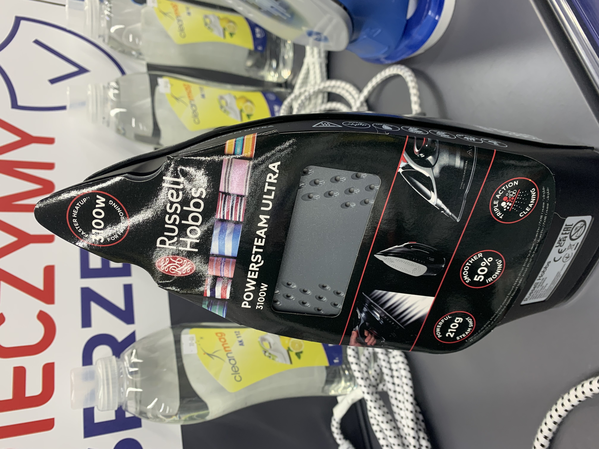

Nakładki żelazka / Wnioski:
- rozwiązanie ,które jest estetyczne i jednocześnie pozwala na przekazanie dużej ilości informacji o produkcie,
- alternatywa dla ulotek/tagów
- poprzednie nakładki ulegały uszkodzeniu przy selekcji produktów przez klientów
- konieczne wprowadzenie tego rozwiązania dla wszystkich żelazek u klientów Top
Best practice konkurencja:

Nakładka na żelazko Russell Hobbs